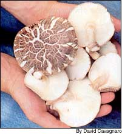
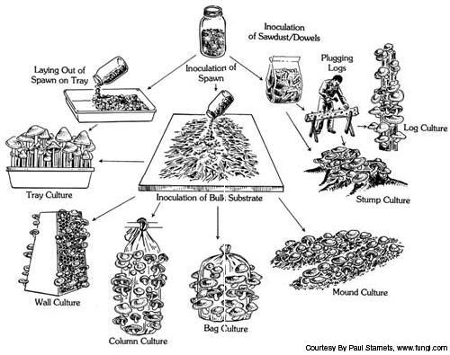
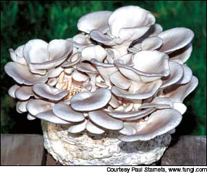
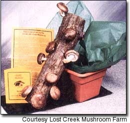
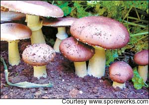
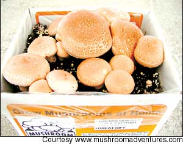

Grow Your Own Mushrooms
Home kits offer an interesting and entertaining way to produce the freshest fungi.
By Barbara Pleasant
October/November 2004, Issue 206
Two of the best reasons to garden are to grow things you would otherwise have to pay too dearly for at the supermarket and to grow great-tasting things you cannot buy at any price. Mushrooms often fill both bills.
Home gardeners in China have been growing mushrooms for more than 1,000 years, and it’s finally catching on among North Americans. Instead of being associated with witches or psychedelic drugs, mushroom gardening has moved into the culinary realm on this side of the world. And growing your own is about producing a truly superior fresh food - and not having to rely on the luck of the hunt.
The surest (and most entertaining) way to grow mushrooms at home is with a mushroom kit, which makes a great winter tabletop project. Depending on the kit, you can grow several types of gourmet mushrooms in a matter of weeks, including oysters (Pleurotus species) and shiitake (Lentinula edodes), as well as various button mushrooms (Agaricus bisporus). Then you can take what you learned from the kit to move on to more sustainable outdoor projects, such as growing oysters in boxes or shiitake on logs. You can even introduce the delectable wine caps (Stropharia rugoso-annulata) to old compost heaps or a shady area of your garden, where they’re apt to naturalize on their own. Start with these easy species and soon you may find yourself dreaming of - and growing - cinnamon caps, lion’s manes or black poplar mushrooms, too.
“It’s fun to cultivate your own mushrooms,” says mushroom expert Thomas Volk, a professor of biology at the University of Wisconsin-La Crosse. He describes growing mushrooms as more art than science, which involves “a lot of watching, adjusting, figuring out what works.” Although mushrooms tend to be slow to “fruit” compared to vegetables, once established in a suitable site, they often stick around a long time, fruiting in flushes for years.
Here’s the best part: You can start with a mushroom kit now, fruit it indoors and use the remains to start a more permanent outdoor colony. Paul Stamets, founder of Fungi Perfecti of Olympia, Wash., and author of six books on mushroom culture, says that’s so because “mushroom mycelium is hungry. It wants to run.” Like a sourdough bread culture, a good strain of mushroom will keep going and going when given the right growing conditions.
A Few Fungi Facts
Mushrooms are the fruiting bodies of fungi, which grow quite differently from plants. Beginning as dustlike spores released from the gills or pores beneath the cap, mushrooms spend much of their life as mycelium - a network of moist fibers that use powerful enzymes to penetrate wood or other organic matter. Chemically, mycelium does the opposite of what plants do. “It’s the reverse of photosynthesis,” Stamets says. “Mushrooms take in carbon and consume oxygen, while plants consume carbon dioxide, and create carbon and oxygen.” Materials rich in carbon that tend to break down slowly, wood, for example, are the preferred substrate of many culinary mushrooms, but there is a fungus at work in nearly every ecological situation. “Fungi govern the decomposition cycles, and make it possible for natural biological systems to operate,” Stamets says. “They are tremendous allies for the health of people and the planet.”
More than 14,000 species of mushrooms have been identified, but only about 250 species are delectable edibles. Of the best-tasting mushrooms, many species defy cultivation and must be found in the wild rather than grown. But some can be grown using an approach that parallels the one we use to grow plants. Start with a vigorous strain appropriate for your region (most often sold as spawn, which is young mycelium), provide it with a suitable substrate upon which to feed and a moist, shady site, and be ready to furnish water or a change of temperature at critical times.
The reward for your efforts will be some of the freshest, tastiest mushrooms you’ll ever eat. Don Simoni of Mushroom Adventures, a San Francisco kit company, says, “A lot of the mushrooms at the market are three to five days old before you buy them, but they’re really good for only two days and then there’s a flavor change.”
You also need patience to grow mushrooms because they fruit only when they are good and ready. Stamets says, “It is my belief that fungi take a very long-term view of their habitat, and they are community-based,” which means fruiting is intended to serve both the fungus and the ecological system it calls home. Edible mushrooms are a minor byproduct of this process.
The easiest culinary mushrooms to grow at home are oysters, shiitake, wine caps and portobellos, but many more possibilities exist. Here’s a closer look at the four named above:
Oysters
Oysters vary in flavor but generally are considered milder than shiitake, and they have a delicate texture that makes them difficult to ship, so they are rarely seen in stores. The stems are slightly tough, but oyster caps are delicious sautéed and served on a sandwich. In the wild, oyster mushrooms are primary decomposers of newly dead trees, especially low-density hardwoods such as cottonwood and poplar. Fast-growing and versatile, oyster mushrooms also will thrive on partially decomposed straw or sawdust. Color varies with the strain; oysters may be white, gray, pink or yellow.
Oyster kits are usually a mass of sticky white mycelium that has fully colonized a small tower of wheat or oat straw, which is enclosed in a perforated plastic bag. Kept moist and humid, the tower soon explodes with oysters, and most kits will produce two flushes. After that, you can use the almost-spent mycelium to inoculate a compost heap or stuff it into cracks between pieces of wood.
You also might try this: Mix it with damp sawdust, coffee grounds and a little straw, stuff it into paper milk cartons with holes punched in the sides, and stash those in plastic bags in the basement. A few months later, you’ll probably have several nice fruitings.
Obviously, you can be pretty creative growing oysters, though it’s best to not forget that these guys really want to be growing on a tree. (Commercially, oysters are grown on columns of sterilized straw, which are hung from ceilings like punching bags.) The mycelium will run horizontally in a sawdust bed, but it might not fruit until it encounters a vertical surface. For inexpensive, low-maintenance oyster production, you can buy plugs of spawn that you tap into holes drilled in newly felled logs. Inoculated with oyster mushroom spawn, the logs are handled just like those used to grow shiitake, but oyster mushrooms are faster to fruit. Kept outdoors, they typically fruit from mid-spring to early summer, and again in the fall. Spells of cool, damp weather trigger fruiting sprees, but the exact timing varies with the climate in which they are grown.
Shiitake
The full, smoky flavor of shiitake mushrooms is matched by their texture, which is so dense that they’re downright meaty when cooked; together, the taste and texture make them especially well suited for use in stronger-flavored dishes. Shiitake also dry well, which is fortunate because they often produce in large flushes. These mushrooms can be grown on blocks of sterilized sawdust, either plain or enriched with cottonseed meal, or on freshly cut hardwood logs. The mycelium runs faster in sawdust because the abundant surface area between sawdust particles provides such easy opportunities for colonization. However, growing shiitake on logs produces a better mushroom, and shiitake logs also can be pretty. “In China, people may find a river and partially bury the inoculated logs vertically on the sandbank, so they become a beautiful landscape feature,” says Frank Michael, producer of shiitake spawn at Mushroompeople in Summertown, Tenn.
In your own yard, you can stack inoculated logs into tipis, angle them against a fence or lay them on the ground on a bed of straw to create what Stamets calls a “land raft.” After three years or so, when fruiting falls off, you can lay the logs in the woods where they may continue to produce a few mushrooms. “We have piles of old, ruined logs that sometimes produce after 10 years,” Michael says.
An ideal inoculated shiitake log is a 40-inch-long chunk of oak or other dense hardwood, 4 to 6 inches in diameter, cut in late winter or spring when the wood is rich with natural sugars, and with the bark left intact. Use a drill to make 1-inch-deep holes 5 to 6 inches apart all around the log. Into these holes insert plugs of spawn, which can be tapped in with a hammer. Each hole is then capped with a thin coat of melted wax to prevent drying and seal out contaminants. Once inoculated, the logs are stacked in a shady place where they can be watered heavily twice a week to keep the internal moisture level of the logs at about 50 percent.
One summer must pass before the logs are ready to fruit. If you inoculate logs in the spring, when fall arrives, you need to immerse a few of them at a time in cool water for 24 hours - the best way to induce fruiting. You can put them in a water trough or old bathtub, or tie them to a concrete block and place it in the shallows of a creek or pond (make sure the logs are completely immersed). And sometimes, if you’re lucky, heavy fall rains will take care of the mandatory soaking for you.
Two to four days after the logs’ soaking, mushrooms will appear. Harvest them with a sharp knife. By rotating a few logs at a time through 24-hour soakings followed by six to eight weeks of resting, you can have fairly reliable, daily harvests of shiitake.
Michael says you can keep shiitake logs fruiting through winter in a greenhouse by strategically soaking a few along and putting the soaked logs in the shade of taller plants. For steady home production, the best strategy is to inoculate 12 to 25 logs, and rotate them so that small groups of two to four are being soaked and brought into production at six-week intervals. Start a new crop every year or two, whenever good logs become available, and you never will be without shiitake.
This all sounds quite straightforward and simple, and it is, but it’s best to start small - with a kit - and see how the shiitake do in your conditions before progressing to a more ambitious enterprise.
You can exclude wild contaminant fungi if you inoculate heavily enough with the right strain, but there is much to the art of growing shiitake. “We read everything, visited successful growers, and still it took us years to learn how to grow shiitake right,” says Sondra Williams, who with her husband, Doug, owns Lost Creek Mushroom Farm in Perkins, Okla. Among the challenges for the Williamses were the length of the incubation period (15 months in Oklahoma), finding the proper tools and learning how to grow the mushrooms in their hot, dry summers.
To help shorten the learning curve, Mushroompeople rents and sells videos on various aspects of shiitake culture, including how to grow them in such extreme climates as Florida and as they are traditionally grown in China and Japan.
Finally, keep in mind that oysters and several other types of “wood loving” mushroom such as lion’s mane (Hericium) and hen-of-the-woods (Grifola) can be grown just like shiitake, and logs are not the only game in town. If you keep a home woodlot, you can cut stumps high and then inoculate them with shiitake, oyster or other wood mushroom spawn. Or, if you have huge, fresh hardwood logs that are simply too big to heft into a soaking tank, cut them into 6-inch “wafers” and stack them into a totem, with sawdust spawn in between the layers. Wet it down, cover the whole thing with a plastic bag to retain moisture and, with a little luck, you’ll eventually get mushrooms.
Wine caps
You can grow the fascinating and delicate-tasting wine cap stropharia (Stropharia rugoso-annulata) right in your garden, just like a regular food crop. Also known as king stropharia, garden giants and several other folk names, these edibles grow on many types of decaying organic matter, from garden soil to piles of wood chips and even compost heaps. Young wine caps grown in shade boast pretty wine-red caps, which quickly change to beige in higher light. Vigorous and persistent in a wide range of climates, these mushrooms fruit lightly in spring, heavily in fall and intermittently through the summer in cool, moist climates.
To establish wine caps in your garden, order a kit or patch in late winter and give it a head start indoors, the same way you might grow tomatoes from seed. Follow the directions included with your kit or patch, and let the mycelium grow at room temperature for a few weeks. Robert Hess, who sells wine cap kits through Spore Works in Knoxville, Tenn., says to “plant” chunks of mycelium wherever you want the mushrooms to grow anytime after the soil temperature has reached 50 to 60 degrees. “It won’t be hard to see the mycelium taking off, because it develops into stringy strands, almost like plant roots,” Hess says. If you want to establish multiple colonies in different parts of your landscape, simply dig a chunk of soil (or compost or wood chips) that’s nicely marbled with white mycelium, and “plant” it where you want a new batch to grow. Be sure to harvest these mushrooms early, when they are still young buttons, to preclude having to share them with insects.
Hess grows wine caps among hostas in his Tennessee shade garden. Volk, in Wisconsin, recommends wine caps as the easiest mushrooms to grow in a pile of wood chips or compost, and in coastal Washington, Stamets has grown wine caps that weighed in at nearly 5 pounds!
Portobellos
You can grow your own button mushrooms indoors, including the common white buttons and the more flavorful portobello or criminis (baby portobellos), too. It’s fun and rewarding, and it lets you enjoy organically grown mushrooms (many commercial growers use pesticides to control insects and diseases) that taste succulent enough to make great roasting mushrooms. A good kit will yield its first crop three weeks after you start it, and will continue to fruit for eight more weeks. When the kit is done, you can use the spent compost to enrich your garden soil.
It’s possible that a mushroom or two eventually will pop up in your garden but it’s not likely because these mushrooms, which are all strains of Agaricus bisporus, need “live” compost (just over halfway decomposed) as their base of operations. Simoni says making a good batch of “live” compost is a labor-intensive, 30-day process, and he has posted his favorite recipe for it on his company’s Web site. “There is no easy way of bypassing the compost part,” he says, noting that if people knew of the large quantities required to get a good yield, they would better appreciate what they’re getting in a kit, as well as the price of good mushrooms in the store.
Mushrooms for Your Health
Mushrooms are surprisingly nutritious while being low in calories, with very little fat and cholesterol. An average serving of five small mushrooms contains 2 grams of protein, almost as much potassium as a banana and three important B vitamins. Mushrooms also are a valuable source of selenium, a nutrient found in meats that may be in short supply in vegetarian diets.
The same mushrooms you enjoy for dinner may have important medicinal properties, too. Several studies are now evaluating the effects mushrooms may have on breast cancer in postmenopausal women and on prostate cancer in men. Other studies are looking into the use of nutritional supplements made from shiitake, oyster and reishi mushrooms as a natural way to lower cholesterol.
Making a Living with Mushrooms
Let’s say you start small, learn the art of growing mushrooms and decide to try growing culinary mushrooms for profit. Gourmet mushrooms are definitely a high value crop, but the world will not beat a path to your door if you grow them. As with other crops that appeal to sophisticated palates, your mushrooms probably will interest only such buyers as chefs or upscale food markets; members of the general public usually do not appreciate why gourmet mushrooms cost more than $6 a pound. The Williamses did well selling shiitake from 2,000 logs to friends and neighbors, but they couldn’t find adequate markets when they added another 4,000 logs. “Doug wanted to grow something that was not harmful to the environment and that would help people,” Sondra says, “but he discovered he was not cut out for getting gussied up and selling to chefs.”
Also, timing can be tricky in a commercial operation. Shiitake can be made to fruit on a schedule, but oysters require intense management. “It’s a lot like dairy farming,” says Glen Babcock of Garden City Fungi in Missoula, Mont. “You have to stay with it all the time.” Babcock started growing certified organic specialty mushrooms in 1995 and now has five climate-controlled mushroom houses. He says diversifying protects you from economic ups and downs, which are part of any agricultural endeavor. He and his wife, Wendy, also have created a teaching module they use to educate groups of science teachers about fungi, and they teach workshops on mushroom culture. In addition, they sell kits and spawn for hobby mushroom growers.
“You don’t need a lot of expensive equipment to get into the business,” Babcock says, “but you do need patience, a willingness to learn and a certain passion for the work.” If you like the process, you can build more of an equipment inventory as you go along.
Demand is increasing for specialty mushrooms, and developments in medicinal mushroom research may make organically grown medicinal mushrooms hot commodities, too. “The folks who get the most satisfaction out of growing mushrooms share a natural fascination with fungi,” Babcock says. If the market heats up, it’ll be the perfect world for such loyal fungi fans as himself.
Mushroom Kit Resources
In addition to the seven regional suppliers listed below, many other sources are available for mushroom culture and spawn. The easiest and most rewarding way to locate local information on mushroom culture is to join a club or mycological society. You can find a club list, organized by location, at the North American Mycological Association’s Web site, www.namyco.org.
Fungi Perfecti
P.O. Box 7634
Olympia, WA 98507
Kits for oyster, shiitake, wine caps, cinnamon caps and almond portobellos, plus a range of spawn and pure cultures. Cultivation seminars four times a year.
Garden City Fungi
P.O. Box 1591
Missoula, MT 59806
Certified organic kits for three types of oyster mushrooms, indoor shiitake and lion’s mane, along with excellent educational materials for teachers.
Mushroompeople
560 Farm Road
P.O. Box 220
Summertown, TN 28483
An assortment of wood mushroom kits, four types of shiitake for inoculating logs and rental of educational videos.
Spore Works
5201 Kingston Pike, Suite 6-324
Knoxville, TN 37919
Wine caps, oyster and shiitake kits to grow from inoculation to fruiting, along with pure cultures of numerous other gourmet strains.
Lost Creek Mushroom Farm
P.O. Box 520
Perkins, OK 74059
Shiitake log kits and various gift boxes.
Mushroom Adventures
355 Serrano Dr., Suite 9-J
San Francisco, CA 94132
Kits to grow button, oyster and portobellos.
Field & Forest Products, Inc.
N3296 Kozuzek Rd.
Peshtigo, WI 54157
Starters for oyster, shiitake and wine caps.
 Mushrooms such as shiitake can be grown on logs outdoors. An ideal shiitake log is a 40-inch-long piece of hardwood, 4 to 6 inches in diameter, cut in late winter or early spring, with the bark left intact. |
 After mycelium is isolated from contaminants and propagated, it?s used to inoculate spawn and can be grown and cultivated using several different methods. |
 Pearl Oyster |
|
 Shitake Kit |
 Wine Caps |
 Portobellos |
|
 |
|
|